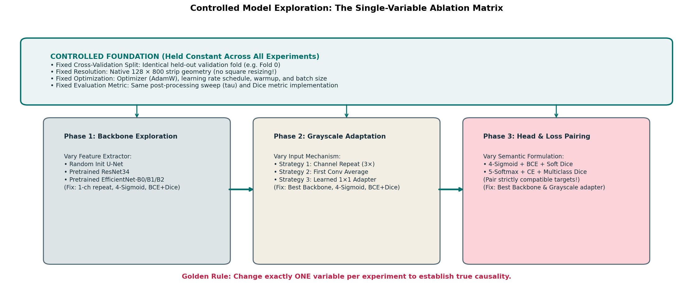

Systematic Model Exploration & Controlled Experimentation
When transitioning from a simple baseline to advanced deep learning architectures, it is tempting to change multiple components simultaneously: swapping to a larger backbone, modifying the loss function, adjusting learning rates, adding new augmentations, and changing decision thresholds all in a single run.
In empirical machine learning, this unstructured approach is known as "alchemy". When your validation score changes, you have no scientific way of knowing which component caused the shift:
- Did your score drop because the new backbone was too complex for your dataset, or because your learning rate was too aggressive?
- Did your score increase because of Soft Dice loss, or because of a lucky random initialization?
To build a competitive, high-performing segmentation pipeline, you must replace guesswork with disciplined, controlled experimentation.
This guide establishes the Milestone 3 Controlled Exploration Matrix. You will learn how to design fair single-variable ablations, properly pair output heads with compatible loss functions and target representations, diagnose subtle training failure modes from learning curves, and systematically evaluate your models against holdout validation metrics.
1. The Golden Rule of Scientific Ablation
The foundation of empirical machine learning is the single-variable ablation principle:
THE GOLDEN RULE: In every experiment, change exactly ONE architectural or hyperparameter choice at a time, while holding all other system variables strictly constant.

Figure 6.1: The Milestone 3 Controlled Exploration Matrix. By holding the split, resolution, optimization schedule, and metric pipeline fixed, each experimental phase cleanly isolates the true causal impact of one design decision.What Must Be Held Constant Across All Experiments?
To guarantee fair, unconfounded comparisons:
- Fixed Validation Split: Always evaluate against the exact same combination-stratified holdout fold (e.g., Fold 0 from Milestone 2). Never compare a model trained on Fold 0 against a model trained on Fold 1 or a random split.
- Fixed Input Resolution & Geometry: Maintain native \(128 \times 800\) strip dimensions. Never compare a model trained on cropped \(128 \times 256\) patches against one trained on full strips without standardizing evaluation.
- Fixed Optimization Budget: Keep total epochs (e.g., 30 epochs), optimizer (AdamW), learning rate warmup duration, and effective mini-batch size identical.
- Fixed Preprocessing & Augmentations: Use the exact same data pipeline (flips, contrast adjustments) across runs.
- Fixed Evaluation Metric & Post-Processing Grid: Evaluate every candidate using the identical decision pipeline: threshold sweep \(\tau \in [0.3, 0.8]\) and minimum connected-component area filtering (\(A_{\min}\)).
2. The Milestone 3 Exploration Matrix
A rigorous exploration of Milestone 3 unfolds across three structured phases:
Exploration Sequence:
Phase 1: Backbone Exploration ──► Phase 2: Grayscale Adaptation ──► Phase 3: Head & Loss Pairing
(Find optimal feature extractor) (Optimize input mechanics) (Determine semantic objective)Phase 1: Feature Extractor & Pretraining Ablation
Objective: Determine how much benefit transfer learning provides over random initialization, and compare the capacity of ResNet versus EfficientNet backbones.
- Fixed Variables: Grayscale Repeat (\(3\times\)), 4-Channel Sigmoid Head, Compound Loss (\(\text{BCE} + 1.0 \cdot \text{Dice}\)), 30 Epochs, Fold 0.
- Controlled Independent Variable: Model Backbone & Pretrained Weights.
| Run ID | Backbone Architecture | Pretrained Weights | Trainable Parameters | Research Hypothesis |
|---|---|---|---|---|
EXP-1.0 |
Custom Baseline U-Net | None (Random Init) | \(\sim 7.8\text{M}\) | Baseline benchmark from Milestone 2. |
EXP-1.1 |
ResNet-34 | ImageNet-1k | \(\sim 21.8\text{M}\) | Tests residual feature transfer on edge defects. |
EXP-1.2 |
EfficientNet-B0 | ImageNet-1k | \(\sim 5.3\text{M}\) | Tests compact inverted residual features & SE attention. |
EXP-1.3 |
EfficientNet-B2 | ImageNet-1k | \(\sim 9.2\text{M}\) | Tests balanced compound scaling on texture anomalies. |
Evaluation Outcome: Identify the backbone that produces the strongest validation Dice and cleanest boundary localization. Carry this backbone forward into Phase 2.
Phase 2: Grayscale Input Adaptation Ablation
Objective: Evaluate whether modifying the first convolution layer or prepending a learned adapter improves efficiency or accuracy over simple channel repetition.
- Fixed Variables: Winning Backbone from Phase 1, 4-Channel Sigmoid Head, Compound Loss (\(\text{BCE} + 1.0 \cdot \text{Dice}\)), 30 Epochs, Fold 0.
- Controlled Independent Variable: Grayscale Input Adaptation Strategy.
| Run ID | Adaptation Strategy | Implementation | GPU VRAM / Step | Research Hypothesis |
|---|---|---|---|---|
EXP-2.0 |
Channel Duplication | x.repeat(1, 3, 1, 1) |
Baseline VRAM | Standard baseline reference. |
EXP-2.1 |
First Conv Weight Sum | \(W_{\text{new}} = \sum_c W_c\) | \(\sim 30\%\) lower loader VRAM | Tests exact mathematical equivalence with 1-channel tensor. |
EXP-2.2 |
First Conv Weight Average | \(W_{\text{new}} = \frac{1}{3}\sum_c W_c\) | \(\sim 30\%\) lower loader VRAM | Tests variance-preserved filter initialization. |
EXP-2.3 |
Learned \(1\times 1\) Adapter | Conv2d(1, 3, 1x1) |
Slight adapter overhead | Tests whether model benefits from learned color-space projection. |
Evaluation Outcome: Select the adaptation strategy that provides the best trade-off between validation Dice score and GPU memory/training speed.
Phase 3: Head & Loss Compatibility Matrix
Objective: Compare independent multi-label detection against mutually exclusive multi-class segmentation.
- Fixed Variables: Winning Backbone from Phase 1, Optimal Adaptation from Phase 2, 30 Epochs, Fold 0.
- Controlled Independent Variable: Output Head, Target Formulation, and Loss Function.
CRITICAL RULE: You cannot test a Softmax head with BCE, nor can you test a Sigmoid head with categorical CrossEntropy! Each head must be paired with its strictly compatible target format and loss function.
| Configuration | Output Head | Target Tensor Format | Compatible Loss Function | Decision Rule at Inference |
|---|---|---|---|---|
| Setup Alpha (Multi-Label) | 4 Logits \([B, 4, 128, 800]\) | Binary Float \([B, 4, 128, 800]\) | \(\mathcal{L}_{\text{BCE}} + \lambda \mathcal{L}_{\text{Dice}}\) | Per-channel threshold \(\tau_k \in [0.3..0.8]\) + collision resolution. |
| Setup Beta (Multi-Class) | 5 Logits \([B, 5, 128, 800]\) | Integer Class \([B, 128, 800]\) | \(\mathcal{L}_{\text{CE}} + \lambda \mathcal{L}_{\text{MultiDice}}\) | Pixel-wise Argmax over 5 classes. |
3. Diagnosing Training Dynamics & Failure Modes
When training runs complete, do not look solely at the final validation Dice number. Inspect your learning curves, gradient norms, and per-class metrics in Weights & Biases to diagnose what the model learned.
Common Training Trajectories in W&B:
Trajectory 1 (Healthy Convergence):
Train Loss: Steady downward slope (0.95 -> 0.35)
Val Dice: Steady rise (0.10 -> 0.65), plateaus around epoch 20-25
Trajectory 2 (Overfitting):
Train Loss: Continues dropping to near zero (0.95 -> 0.05)
Val Dice: Peaks at epoch 12, then steadily degrades (0.60 -> 0.45)
Diagnostic: Model memorizing training sheet textures; increase weight decay or spatial augmentations.
Trajectory 3 (Class Collapse / Trivial Shortcut):
Train Loss: Plummets to ~0.03 in epoch 1 and stays flat
Val Dice: Remains at 0.0000 across all epochs!
Diagnostic: Model collapsed to all-background prediction; increase Dice weight lambda or pos_weight!Specific Failure Modes in Industrial Strip Segmentation:
1. Boundary Erosion
- Symptom: Model detects the general location of defects, but predicted masks are systematically smaller than ground truth (undercounting pixels).
- Root Cause: Excessive BCE weighting relative to Dice, or threshold \(\tau\) set too high (e.g., \(0.8\)). The network avoids false positive penalties by shrinking predicted boundaries.
- Diagnostic: Plot precision vs. recall. High precision (\(95\%\)) paired with low recall (\(40\%\)) indicates boundary erosion.
2. Hairline Scratch Dissolution
- Symptom: Model achieves high Dice on large inclusions (
defect_c), but achieves near-zero Dice on thin longitudinal scratches (defect_a). - Root Cause: Receptive field downsampling without adequate skip connection fidelity, or bilinear interpolation smoothing out thin lines.
- Diagnostic: Inspect per-class Dice scores separately. Never rely on the overall macro average!
3. False Alarm Speckle Storm
- Symptom: Model predicts dozens of tiny 1-to-3 pixel defect blobs across clean background steel.
- Root Cause: Dice loss dominates without sufficient BCE anchoring, or threshold \(\tau\) set too low (\(0.2\)).
- Diagnostic: Inspect connected-component count per image. Apply minimum area filtering (\(A_{\min} \ge 50\text{ px}\)) during post-processing to eliminate isolated sensor noise.
4. Fair Experiment Design: The Controlled Comparison Checklist
Before launching an experimental run, verify that your setup satisfies this 6-point checklist:
- [ ] 1. Exact Seed Control: Have you set deterministic random seeds for Python, NumPy, and PyTorch?
- [ ] 2. Single-Variable Verification: Is exactly one component different from your baseline checkpoint?
- [ ] 3. Data Leakage Isolation: Are training augmentations isolated from the validation set?
- [ ] 4. Logged Artifacts: Are model checkpoints, hyperparameters, and git commit hashes logged to your experiment tracker?
- [ ] 5. Compatible Head and Loss: If you changed the output head, did you update both the target tensor format and the loss criterion?
- [ ] 6. Unbiased Calibration: Are post-processing thresholds evaluated across the entire validation set, without peeking at the test set?
5. Comprehensive Debugging Matrix
| Bug / Pitfall | Root Cause | Observable Symptom | Practical Diagnostic |
|---|---|---|---|
| Exploding Gradients / NaN Loss | Pretrained backbone receives large learning rate on epoch 1 without warmup. | Loss becomes NaN within the first 50 batches; weights become invalid. |
Clip gradient norms (nn.utils.clip_grad_norm_(model.parameters(), 1.0)); add linear warmup. |
| Silent Metric Drift | Calculating validation Dice on mini-batches and averaging the ratios instead of accumulating global counts. | Validation Dice does not match offline evaluation script. | Accumulate True Positives, False Positives, and False Negatives across the full fold before computing Dice. |
| Dead Defect Channel | Rare class (defect_b) never receives positive gradient in early epochs. |
Predicted probabilities for that channel remain \(< 0.01\) everywhere. | Check positive class count in mini-batches; consider rare-class batch sampling or loss weighting. |
| Post-Processing Misalignment | Post-processing thresholds tuned on training data rather than validation data. | Validation score drops significantly relative to training score. | Calibrate \(\tau\) strictly on held-out validation fold predictions. |
6. Ungraded Try-It Activity: Design an Unbiased Ablation Study
Put yourself in the shoes of a lead machine learning engineer:
Your pair-programming partner proposes the following experiment to improve your team's baseline:
"I updated our script! I changed our backbone from ResNet-34 to EfficientNet-B2, increased the learning rate from \(1 \times 10^{-4}\) to \(5 \times 10^{-4}\), replaced BCE loss with Focal Loss, and evaluated on Fold 2 instead of Fold 0. Our validation score jumped from \(0.58\) to \(0.64\)! We should adopt all these changes immediately!"
Questions to answer:
- Identify at least four confounding variables in your partner's experiment.
- Why is the comparison between Fold 0 and Fold 2 invalid?
- How would you redesign this investigation into a sequence of controlled, single-variable experiments that isolate the true cause of the score improvement?
Click here to view the worked solution
- Four Confounding Variables:
- Variable 1: Backbone architecture (ResNet-34 \(\to\) EfficientNet-B2).
- Variable 2: Learning rate (\(1 \times 10^{-4} \to 5 \times 10^{-4}\)).
- Variable 3: Loss function (BCE \(\to\) Focal Loss).
- Variable 4: Validation partition (Fold 0 \(\to\) Fold 2).
-
Invalidity of Cross-Fold Comparison: Different folds contain different subsets of images. Fold 2 might happen to contain easier defect instances or fewer clean images than Fold 0. Comparing scores across different validation splits is scientifically meaningless because the benchmark difficulty changed!
-
Redesigned Single-Variable Sequence:
- Step 1 (Hold Fold 0, LR \(1\times 10^{-4}\), BCE loss constant): Run ResNet-34 vs. EfficientNet-B2. (Measures backbone impact alone).
- Step 2 (Take winning backbone from Step 1, hold Fold 0 and BCE loss constant): Sweep LR \(1\times 10^{-4}\) vs. \(5\times 10^{-4}\). (Measures optimization impact alone).
- Step 3 (Take winning backbone and LR from Step 2, hold Fold 0 constant): Compare BCE vs. Focal Loss. (Measures loss formulation impact alone). Now you know exactly which changes helped and which changes hurt!
7. Primary Sources & Further Reading
- Smith, L. N. (2018). A disciplined approach to neural network hyper-parameters: Part 1 -- learning rate, batch size, momentum, and weight decay. arXiv:1803.09820. Practical methodologies for controlled hyperparameter tuning.
- Bouthillier, X., et al. (2021). Accounting for variance in machine learning benchmarks. MLSys. arXiv:2103.03082. Discusses sources of random variation and how to conduct fair empirical comparisons.
- Weights & Biases Documentation: Best Practices for Hyperparameter Sweeps. W&B Sweeps Guide. Structuring multi-run experiment grids and tracking metric lineages.